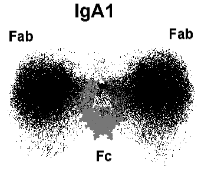

CLRC News - from DL and RAL
CLRC News - from DL and RAL
CLRC News - from DL and RAL
New Year Honours
Daresbury User
John Ernest Walker FRS, who won a Nobel prize for Chemistry
in 1997, was made a Knight Bachelor in the New Year Honours list for
services to molecular biology
NEWS FOR SMALL MOLECULE CRYSTALLOGRAPHERS
STATION 9.8 IS NOW AVAILABLE
VIA DARTS
Based at the CLRC Daresbury Laboratory, the DARTS data collection service using synchrotron radiation (SR) has now been available to academic users for a year. The purpose of this EPSRC-funded service is to provide access to SR data, using a wide range of techniques (including powder diffraction, reflectivity, small and wide angle scattering and X-ray absorption spectroscopy), to academics who are inexperienced in its use and applications. The range of samples investigated using the service demonstrates the versatility of the facility: for example, we have looked at samples of pharmaceutical interest, thin films, whale bones, zirconia pigments and transition metal nitrides.
For the period February - September 1999, the service is to be extended to incorporate single crystal diffraction using the microcrystal facility on station 9.8 of the SRS. This station specialises in single crystal diffraction from small or weakly scattering samples and has been widely used by industrial DARTS customers since the inception of the service. It should be noted that this service should not be regarded as a direct alternative to the national crystallography service run by Prof. M. Hursthouse - evidence must be included with applications to show that laboratory-based diffraction methods are unsuitable for the proposed research.
Academic access to the service is available to any researcher eligible to apply for research grants from EPSRC and demand for time is subject to scientific peer review with users being able to apply at any time. The service is intended to support those inexperienced in the use of SR techniques; it is intended for projects that involve small scale SR use as part of a wider research scheme or where the use of SR is likely to remain infrequent.
For application forms or further information please get in touch with the
DARTS staff at the following address:
DARTS, CLRC Daresbury Laboratory, Daresbury, Warrington, Cheshire, WA4 4AD,
tel. 01925 603141, e-mail darts@dl.ac.uk.
Further information is also available on our website -
http://www.dl.ac.uk/SRS/
A series of user consultation meetings are currently taking place; they cover all scientific disciplines to determine the ideal source parameters for the new UK synchrotron. This is being carried out in addition to the discussions of individual user groups. Synchrotron Radiation user opinion is being sought regarding the really challenging experiments they wish to undertake in the physical and biological sciences. This process will continue eventually from the source into the design of beam lines and optics.
The final decision regarding site has yet to be made but is expected very
soon!
A workshop to promote the use of neutron scattering for the UK Biochemistry, Biological and Biotechnology research community was held at Coseners House, Abingdon on the 9/10 November 1998. Sponsored by the CLRC’s ISIS pulsed neutron facility at the Rutherford Appleton Laboratory, it attracted some 49 participants from a range of university departments, including Biochemistry, Biophysics, Pharmacy, Veterinary Science, other specialist centres (e.g. Wellcome Trust Centre for Cell-Matrix Research), Industry (Glaxo-Wellcome, Roche), and representatives from the BBSRC.
The meeting focussed on the applications of neutron reflectivity, small angle neutron scattering (SANS), and diffraction in biomolecular sciences, pharmacy and food science. A series of excellent talks on the study of surfaces and interfaces of biological relevance and interest and of membranes by specular neutron reflectivity, macromolecular complexes by SANS, low resolution crystallography and high resolution crystallography relevant to pharmaceutical applications illustrated the potential of the neutron scattering technique. The talks stimulated lively discussion, and the evening dinner on the 9th provided ample opportunity for extended discussion and interaction.
Professor Steve Perkins (Royal Free and University College Medical School) is seen describing the structure of the immunoglobulin A antibodies, 1gAl, and 1gGl. Immunoglobulin A is an abundant antibody class that mediates immune protection at mucosal surfaces as well as in blood. The monomeric lgAl isotype is abundant in plasma, and contains two four-domain Fab fragments joined by two 23-residue glycosylated hinges to a Fc fragment. However the overall arrangement of these fragments is not known.
Steve Perkins (Royal Free Hospital) and Peter Timmins (ILL) highlighted the applications of SANS in the study of the conformation of proteins, viruses and other macromolecular complexes in solution and for low resolution crystallography on surfactant-protein complexes. Athene Donald (Cambridge) demonstrated the complementarity of X-rays and neutrons in the study of complex food related systems, where SANS was used to monitor the distribution and role of water in the breakdown of starch granules during "cooking" (gelatinisation).
Steve Perkins (Royal Free) and his collaborators Professor M A Kerr and Dr J M Woof (Dundee) have used neutron and x-ray small angle scattering to determine the average solution structure. The figure shows the 100 best-fit solution structures, which show that the two Fab fragments are widely separated from each other relative to the Fc fragment. Such a structure readily accounts for the binding of lectins to the 1gAl hinge, and suggests that lgAl may have a distinct immune role in targeting widely-spaced epitopes with which immunoglobulin 9 cannot react.
Bob Thomas (Oxford) showed how neutron reflectivity in
combination with
H/D isotopic substitution (the ability to manipulate refractive index or
"contrast" being a recurring theme and an important feature of the
neutron scattering technique has revealed at modest resolution some
important aspects (the nature of the packing and the extent of solvent
penetration into the protein layer) of the structure of protein, adsorbed at
the air-water and liquid-solid interfaces. Thomas Bayerl (Wurzburg) showed
how the same experimental approach can be used to study protein-membrane
interactions. Using data from both SANS and neutron reflectivity, David
Barlow (Kings College, London) discussed the design of surface-active
molecules for drug-delivery applications, and the need for detailed
structural information of such molecules at interfaces and in aggregates.
Joe Zaccai (ILL) showed how both diffraction and inelastic scattering can provide a detailed insight into the structure of model membranes. Chris Frampton (Roche), from a commercial perspective, described how highly detailed neutron single crystal measurements in combination with X-ray data provide important information about hydrogen positions and charge density distributions in small molecules of pharmaceutical relevance.
Many of the participants took the opportunity to see the facilities at ISIS. The meeting concluded with a discussion session chaired by Tony Watts (Oxford, and focussed on issues such as the facilities available and the possible modes of access to the facility via the BBSRC. The meeting successfully identified a number of areas within the broad BBSRC remit that are ripe for exploitation, and fruitful discussions are expected to ensue. It was clear to all that there was much potential for expansion of the biological sciences use of ISIS, and the BBSRC (through David White, Colin Miles and Marlie MacLean) were keen to monitor progress.
Anyone requiring further information on the opportunity for the use of ISIS in the area of biological sciences should contact Chick Wilson (c.c.wilson@rl.ac.uk) or Jeff Penfold (j.penfold@ rl.ac.uk) at ISIS or Colin Miles/Marlie MacLean at the BBSRC.
J Penfold, C C Wilson, A Watts.
Page last updated 14 Mar 1999
 Click here to return to BCA homepage
Click here to return to BCA homepage